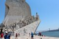
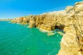
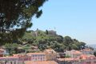

Multimédia
Nesta página encontra conteúdos multimédia.
Fotografias



Vídeo
Poesia
Lisboa acorda banhada de luz,
Com o Tejo a seus pés a brilhar,
Entre colinas a cidade conduz,
E há sempre uma rua para descobrir e caminhar.
Nos elétricos que sobem devagar,
Ecoam histórias de outros tempos,
Enquanto o vento vem do mar,
E leva consigo antigos pensamentos.
Nas ruas estreitas de Alfama,
O fado deixa a sua melodia,
E quando a noite lentamente chama,
Lisboa transforma-se em poesia.
Ao longe, o Tejo encontra o céu,
E a cidade adormece devagar,
Lisboa guarda aquilo que viveu,
E deixa sempre vontade de voltar.

A beleza está no cume.
Lisboa
Uma cidade entre o rio e as colinas.
LISBOA
Uma cidade para descobrir
Entre o Tejo, as colinas e as ruas históricas, Lisboa guarda sempre um lugar para explorar.